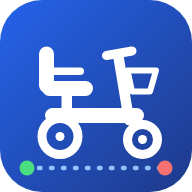

Privacyverklaring ScootNav
ScootNav is een navigatie-app voor scootmobielen ("Met de scoot van A naar B"). In deze verklaring staat welke gegevens de app gebruikt, waarvoor, en wat er níet gebeurt. Kort gezegd: de app heeft geen account, geen advertenties en geen eigen server, en er wordt niets over u verzameld om te bewaren.
1. Uw locatie
De app gebruikt de locatie van uw telefoon (GPS) om u op de kaart te tonen, een route te berekenen en u onderweg aanwijzingen te geven. De app vraagt hiervoor toestemming. U kunt die altijd intrekken in de instellingen van uw telefoon; de app werkt dan zonder eigen locatie (bijvoorbeeld met de demo-rit).
Om een route of adres te kunnen bepalen, stuurt de app de benodigde coördinaten naar de kaartdiensten hieronder (punt 4). Dat gebeurt alleen op het moment dat u een route plant, een adres zoekt of de noodknop opent. De app houdt geen geschiedenis van uw locaties bij.
2. Gegevens die u zelf invult
Uw thuisadres, de naam en het telefoonnummer van uw noodcontact, de accustand, het bereik van uw scootmobiel en uw instellingen (zoals tekstgrootte en spraak) worden alleen op uw eigen telefoon bewaard. Ze worden niet naar ons of naar anderen verstuurd.
Uitzondering: als u op "Naar Huis" tikt, wordt uw thuisadres naar de adreszoeker (punt 4) gestuurd om de plek op de kaart te vinden. Als u de noodknop gebruikt om te bellen of een sms te sturen, opent de app de telefoon- of berichten-app van uw toestel; u verstuurt dat bericht zelf.
3. Wat de app níet doet
- Geen account of inloggen.
- Geen advertenties en geen advertentie-ID.
- Geen analyse- of volgdiensten (zoals Google Analytics).
- Geen verkoop of doorgifte van gegevens voor marketing.
- Geen eigen server die uw gegevens opslaat.
4. Kaartdiensten die de app gebruikt
Voor de kaart, het zoeken van adressen en het berekenen van routes gebruikt de app openbare diensten op basis van OpenStreetMap. Zij ontvangen bij gebruik uw IP-adres en de gevraagde gegevens (zoals een kaartgebied, zoekterm of coördinaten):
- Kaarttegels: OpenStreetMap Foundation (tile.openstreetmap.org) — privacybeleid
- Adressen zoeken: Nominatim (nominatim.openstreetmap.org), OpenStreetMap Foundation — privacybeleid
- Routes en drukke oversteken: Valhalla-routeplanner van FOSSGIS e.V. (valhalla1.openstreetmap.de) — privacybeleid
- Lijnen van het fietsknooppuntennetwerk: Overpass API (onder meer overpass-api.de)
Gesproken aanwijzingen worden gemaakt door de spraakfunctie van uw eigen telefoon.
5. Bewaren en verwijderen
Omdat alles op uw telefoon staat, verwijdert u al uw gegevens door de app te verwijderen of de app-gegevens te wissen in de instellingen van uw telefoon.
6. Kinderen
De app is bedoeld voor volwassenen en niet gericht op kinderen.
7. Contact
Vragen over deze privacyverklaring? Stel ze via de projectpagina op GitHub.